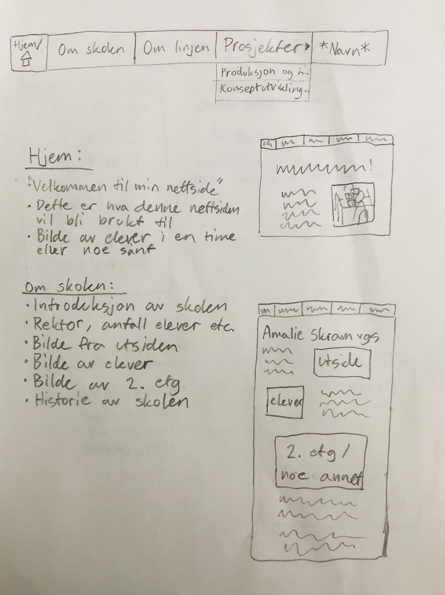
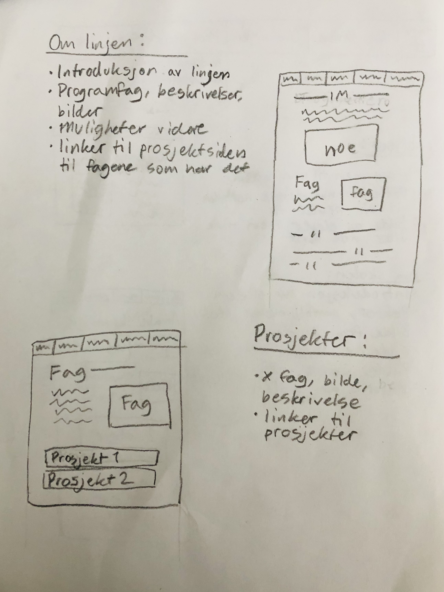

Prosessen av å lage denne nettsiden
Det tok meg en stund å komme i gang med nettsiden, men en dag jeg spilte The Sims 4 i klasserommet mitt etter skoletid, traff idéen meg plutselig. Jeg ville få idéen ned på papir så raskt som mulig, og endte opp med dette:

